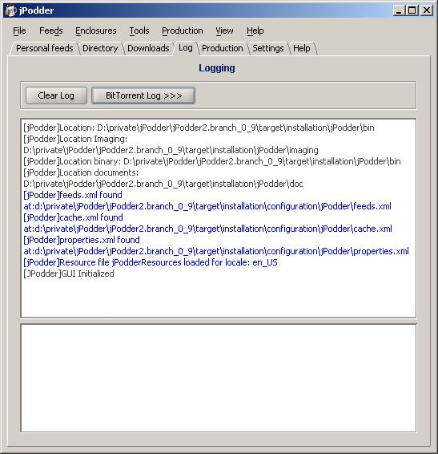

Shows the log output of the application (top) and the handling.
 The elements are:
| Clear Log | If clicked it will remove any log output |
| BitTorrent Log >>> | If clicked it will toggle between showing and hidding the BitTorrent logs (bottom) |
| Top Text Area | Displays the log output of jPodder |
| Bottom Text Area | Displays the BitTorrent logs |